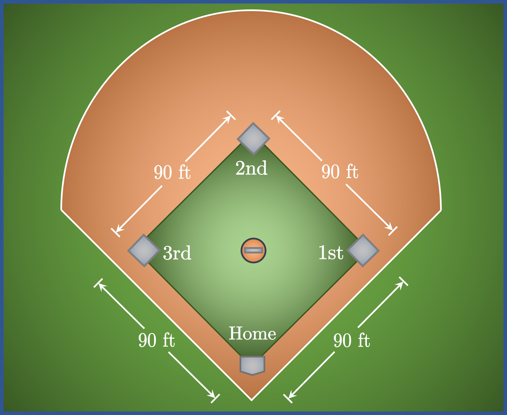

A right triangle has legs of lengths \(x\) and \(y.\)
Length \(x\) is increasing at a rate of \(3\) inches per minute,
while length \(y\) remains constant.
At a certain moment, \(y = 4 \un{in}.\)
Find the rate at which the triangle's area is changing at this time.
A square's sides all are shrinking at a rate of \(2\) inches per minute.
When each side is \(6\) inches long, how quickly is the square's area decreasing?
A rectangle's width is increasing at a rate of \(2\) centimeters per second,
and its height is increasing at a rate of \(0.5\) centimeter per second.
At what rate is the rectangle's area changing when its width is \(4\) centimeters
and its height is \(5\) centimeters?
A \(6\)-meter string swings to form an angle \(\theta\) with the vertical, and \(\theta\) extends outward at a rate of \(2\)
radians per second. What is the rate of change of the area of the circular sector intercepted by \(\theta \; ?\)
Water is pumped, at a rate of \(15\) cubic inches per minute, into a cylindrical tank of radius \(5\) inches.
How fast is the tank's water level rising?
A uniform trough has a cross-sectional area of \(64\) square inches.
If water is pumped into the trough at a rate of \(7\) cubic inches per second, then
how quickly is the water level rising?
Boyle's Law states that a sample of gas of volume \(V\) exposed to pressure \(P\)
obeys the relationship \(PV = C,\) where \(C\) is a constant.
Many gases obey this law if \(P\) is not too high and the gas's temperature is constant.
Suppose that a gas has a volume of \(60\) cubic inches
and is exposed to \(200\) kilopascals of pressure.
If the pressure is increased at a rate of \(30\) kilopascals per second,
then find the rate at which the gas's volume decreases.
Two positive charges are located \(r\) meters apart.
Both charges repel each other by exerting the same force \(F\) on the other
(Figure 1),
and \(F = 0.4/r^2.\)
The force decreases at a rate of \(0.4\) newton per second.
Find the rate at which \(r\) changes when the charges are \(2\) meters apart.
A square-shaped sheet of dough is stretched horizontally at a rate of \(3\) inches per second.
The vertical length of the sheet then decreases such that the sheet retains an area of \(70\) square inches.
When the dough's horizontal length is \(14\) inches, how fast is its vertical length decreasing?
The radius of a circular cone is decreasing at a rate of \(7\) inches per hour,
and its height is increasing at a rate of \(8\) inches per hour.
At what rate is the cone's volume changing when its radius is \(4\) inches and its height is \(3\) inches?
A meteor is a piece of matter that enters Earth's atmosphere at a very high speed.
Most meteors are small and quickly burn up, completely disintegrating before they strike the ground.
Suppose that a meteor of mass \(10\) grams enters Earth's atmosphere with a velocity of
\(40\) kilometers per second.
This meteor loses mass at a rate of \(0.5\) gram per second
and decelerates at a rate of \(4\) kilometers per second per second.
Momentum is the product of mass and velocity.
(The units of momentum in this context are gram–kilometers per second.)
Immediately after the meteor enters Earth's atmosphere,
what is the rate of change of its momentum?
A balloon is inflated such that it maintains its spherical shape.
Air enters the balloon at a rate of \(50\) milliliters per minute.
When the ballon's volume is \(4000 \pi/3\) milliliters,
find the rate at which the ballon's radius is increasing.
(Note: \(1 \un{mL} = 1 \un{cm}^3.\))
Two cars are approaching an intersection. Car A is driving due east at \(30\) miles per hour,
and car B is driving due north at \(25\) miles per hour.
When car A is \(3\) miles west of the intersection and car B is \(4\) miles south of the intersection,
at what rate is the distance between the cars changing?
The straight edge of a \(5\)-inch candy cane leans against a wall of a gingerbread house.
The candy cane slides down the wall at a rate of \(0.1\) inch per second.
When the foot of the cane is \(3\) inches from the wall, find the rate at which the cane slides away from the house.
A \(15\)-foot ladder leans against a wall.
The ladder slides away from the wall at a rate of \(3\) feet per second.
When the top of the ladder is \(8\) feet above the ground,
determine the rate of change of the area of the triangle formed under the ladder.
When a \(10\)-foot ladder slides down a wall at a rate of \(0.6\) foot per second,
the angle \(\theta\) between the floor and the ladder is changing.
Find the rate at which \(\theta\) is changing when the bottom of the ladder is \(6\) feet away from the wall.
An electrical appliance of resistance \(R\) is connected to a wire that carries a current \(I.\)
Electrical power is given by
\[P = I^2 R \pd\]
The appliance's resistance is increasing at a rate of \(3\) ohms per second,
and the wire's current is increasing at a rate of \(0.1\) ampere per second.
Find the rate at which the appliance's electrical power is changing when its resistance is \(20\) ohms
and the wire's current is \(2\) amperes.
Jack is initially located \(10\) miles due west of Jorge.
At the same moment,
Jorge begins to walk due south at \(3\) miles per hour, and Jack walks due west at \(4\) miles per hour.
After \(1\) hour, how fast is the distance between the two men changing?
A roll of string is pivoted on a balcony that is \(10\) feet above the ground.
One end of the string is then dropped to the ground
and pulled away from the balcony at a rate of \(2\) feet per second.
Find the rate at which the string's length is changing when the dropped end of the string is \(8\) feet away from the balcony.
A cable connects a boat at sea to an anchored point on the pier, located \(12\) feet above the water level.
The boat is reeled toward the pier at a speed of \(0.1\) foot per second.
Find the rate at which the cable's length is changing when the boat is \(7\) feet from the foot of the pier.
Two resistors with resistances \(R_1\) and \(R_2\) are connected in parallel with each other.
The equivalent resistance of this configuration is
\[\frac{1}{R_{\text{eq}}} = \frac{1}{R_1} + \frac{1}{R_2} \pd\]
Resistance \(R_1\) is increasing at a rate of \(2\) ohms per second,
and resistance \(R_2\) is increasing at a rate of \(3\) ohms per second.
When \(R_1 = 10 \, \Omega\) and \(R_2 = 15 \, \Omega\) (\(\Omega =\) ohm),
at what rate is \(R_{\text{eq}}\) changing?
A \(5\)-foot man walks, at a speed of \(3\) feet per second, away from a street light that is \(17\) feet tall.
When the man is \(6\) feet away from the light, find the rate at which the man's shadow length is increasing.
A \(6\)-foot man jogs \(9\) feet per second due west of a light post that is \(25\) feet tall.
When the man is \(9\) feet west of the light, find the rate at which
the tip of his shadow is changing.
An inverted conical tank has a radius of \(5\) feet and a height of \(10\) feet.
Water is pumped into the tank at a rate of \(8\) cubic feet per minute.
When the water is \(4\) feet deep, how quickly is the water level rising?
In the \(xy\)-plane, let \(\theta\) be the angle subtended by the \(x\)-axis and
a line connecting the origin to the graph of \(y = \sqrt x.\)
If \(x\) increases at a rate of \(3\) inches per second,
then find the rate at which \(\theta\) changes when \(x = 4.\)
On a flat field, Kristine extends a \(20\)-foot kite into the air.
A gust of wind blows the kite upward toward the sky at a rate of \(2\) feet per minute.
Find the rate at which the ground distance between Kristine and her kite
is changing when the kite is \(10\) feet above the ground.
A hot air balloon rises at a rate of \(3\) feet per second over a flat terrain.
A house is \(100\) feet away from the balloon's shadow directly below.
When the balloon is \(200\) feet above the ground,
find the rate at which the angle of elevation from the house to the balloon is changing.
A boat leaks \(300\) cubic inches of oil into a pond.
The oil spill spreads over the surface of the pond in the shape of a cylinder with uniform depth.
The radius of the cylinder steadily increases at a rate of \(4\) inches per second.
When the cylinder's radius is \(6\) inches,
find the rate at which the cylinder's thickness is changing.
A clock's minute hand has length \(\ell\) inches.
In terms of \(\ell,\) find the rate at which the hand sweeps out area
in terms of square inches per minute.
A security camera is positioned \(40\) feet north of parking space \(\text{B}1.\)
The security camera spins at a speed of \(10\) revolutions per minute.
At what speed does the camera sweep the region \(20\) feet east of space \(\text{B}1?\)
A lighthouse is \(5\) miles north of a straight shoreline.
The lighthouse has a revolving beacon that spins at a speed of \(2\) revolutions per second.
What is the speed of the spot of light along the shoreline when the spot of light is \(3\) miles away from the point nearest the lighthouse?
A uniform, conducting wire has a linear charge density \(\lambda.\)
The electric field experienced by a charged object \(r\) meters away due to the wire is
\[E = \frac{\lambda}{2 \pi \varepsilon_0 r} \cma\]
where \(\varepsilon_0\) is a physical constant called the permittivity of free space.
The wire's charge density is decreasing at a rate of \(3\) coulombs per meter per second,
and the object's distance from the wire is increasing at a rate of \(2\) meters per second.
At a certain instant, the wire's charge density is \(1\) coulomb per meter
and the object is \(9\) meters away from the wire.
How fast is the electric field changing at this moment?

In baseball the playing field consists of a home plate and three bases—bases \(1,\) \(2,\) and \(3.\)
These points are the vertices of a diamond whose sides are \(90\) feet long.
(Figure 2 shows a simplified diagram of the playing field.)
A baseball player begins to run from second base to third base at a speed of \(20\) feet per second.
After three seconds of running, find the rate at which the distance between the player and home plate is changing.
A batter hits a baseball from home plate straight to second base at a speed of \(122\) feet per second.
After \(0.5\) second, how quickly is the distance between the baseball and first base changing?
(See Figure 2.)